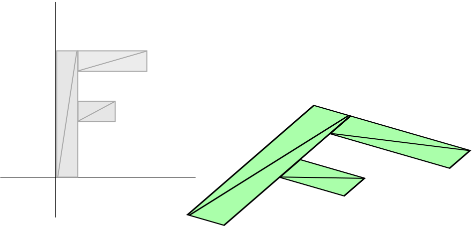
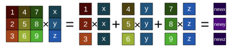

Matemáticas de matrices en WebGPU
Este artículo es el cuarto de una serie que esperamos que te enseñe sobre matemáticas 3D. Cada uno se basa en la lección anterior, por lo que es posible que te resulten más fáciles de entender leyéndolos en orden.
- Traslación
- Rotación
- Escalado
- Matemáticas de matrices ⬅ estás aquí
- Proyección ortográfica
- Proyección en perspectiva
- Cámaras
- Pilas de matrices
- Grafos de escena
En las últimas 3 publicaciones repasamos cómo trasladar, rotar y escalar las posiciones de los vértices. La traslación, la rotación y el escalado se consideran tipos de transformación. Cada una de estas transformaciones requirió cambios en el shader y cada una de las 3 transformaciones dependía del orden.
En nuestro ejemplo anterior, escalamos, luego rotamos y después trasladamos. Si aplicáramos esas operaciones en un orden diferente, obtendríamos un resultado distinto.
Por ejemplo, aquí tienes un escalado de 2, 1, una rotación de 30 grados y una traslación de 100, 0.
Y aquí una traslación de 100, 0, una rotación de 30 grados y un escalado de 2, 1.

Los resultados son completamente diferentes. Peor aún, si necesitáramos el segundo ejemplo, tendríamos que escribir un shader diferente que aplicara la traslación, rotación y escalado en nuestro nuevo orden deseado.
Bueno, algunas personas inteligentes descubrieron una forma de hacer todo lo mismo con matemáticas de matrices (matrix math). Para 2D usamos una matriz de 3x3. Una matriz de 3x3 es como una cuadrícula con 9 celdas:
| 1 | 4 | 7 |
| 2 | 5 | 8 |
| 3 | 6 | 9 |
Para hacer el cálculo, multiplicamos la posición a lo largo de las filas de la matriz y sumamos los resultados.

Nuestras posiciones solo tienen 2 valores, x e y, pero para hacer este cálculo necesitamos 3 valores, así que usaremos 1 para el tercer valor.
En este caso, nuestro resultado sería:
nuevoX = x * 1 + y * 4 + 1 * 7
nuevoY = x * 2 + y * 5 + 1 * 8
nuevoZ = x * 3 + y * 6 + 1 * 9
Probablemente estés mirando eso y pensando “¿PARA QUÉ SIRVE?”. Bueno, supongamos que tenemos una traslación. Llamaremos tx y ty a la cantidad que queremos trasladar. Hagamos una matriz como esta:
| 1 | 0 | tx |
| 0 | 1 | ty |
| 0 | 0 | 1 |
Y ahora compruébalo:
Si recuerdas tu álgebra, podemos eliminar cualquier lugar que multiplique por cero. Multiplicar por 1 efectivamente no hace nada, así que simplifiquemos para ver qué está pasando:
o de forma más sucinta:
nuevoX = x + tx; nuevoY = y + ty;
Y nuevoZ realmente no nos importa.
Eso se parece sorprendentemente al código de traslación de nuestro ejemplo de traslación.
Del mismo modo, hagamos la rotación. Como señalamos en la publicación sobre rotación, solo necesitamos el seno y el coseno del ángulo al que queremos rotar, así que:
s = Math.sin(ánguloEnRadianes); c = Math.cos(ánguloEnRadianes);
Y construimos una matriz como esta:
| c | -s | 0 |
| s | c | 0 |
| 0 | 0 | 1 |
Aplicando la matriz obtenemos esto:
Tachando todas las multiplicaciones por 0 y 1 obtenemos:
Y simplificando obtenemos:
nuevoX = x * c - y * s; nuevoY = x * s + y * c;
Que es exactamente lo que teníamos en nuestro ejemplo de rotación.
Y por último, el escalado. Llamaremos sx y sy a nuestros 2 factores de escala.
Y construimos una matriz como esta:
| sx | 0 | 0 |
| 0 | sy | 0 |
| 0 | 0 | 1 |
Aplicando la matriz obtenemos esto:
que es realmente:
que simplificado es:
nuevoX = x * sx; nuevoY = y * sy;
Que es lo mismo que nuestro ejemplo de escalado.
Ahora estoy seguro de que todavía podrías estar pensando “¿Y qué? ¿Cuál es el punto?”. Eso parece mucho trabajo solo para hacer lo mismo que ya estábamos haciendo.
Aquí es donde entra la magia. Resulta que podemos multiplicar matrices entre sí y aplicar todas las transformaciones a la vez. Supongamos que tenemos una función, mat3.multiply, que toma dos matrices, las multiplica y devuelve el resultado.
const mat3 = {
multiply: function(a, b) {
const a00 = a[0 * 3 + 0];
const a01 = a[0 * 3 + 1];
const a02 = a[0 * 3 + 2];
const a10 = a[1 * 3 + 0];
const a11 = a[1 * 3 + 1];
const a12 = a[1 * 3 + 2];
const a20 = a[2 * 3 + 0];
const a21 = a[2 * 3 + 1];
const a22 = a[2 * 3 + 2];
const b00 = b[0 * 3 + 0];
const b01 = b[0 * 3 + 1];
const b02 = b[0 * 3 + 2];
const b10 = b[1 * 3 + 0];
const b11 = b[1 * 3 + 1];
const b12 = b[1 * 3 + 2];
const b20 = b[2 * 3 + 0];
const b21 = b[2 * 3 + 1];
const b22 = b[2 * 3 + 2];
return [
b00 * a00 + b01 * a10 + b02 * a20,
b00 * a01 + b01 * a11 + b02 * a21,
b00 * a02 + b01 * a12 + b02 * a22,
b10 * a00 + b11 * a10 + b12 * a20,
b10 * a01 + b11 * a11 + b12 * a21,
b10 * a02 + b11 * a12 + b12 * a22,
b20 * a00 + b21 * a10 + b22 * a20,
b20 * a01 + b21 * a11 + b22 * a21,
b20 * a02 + b21 * a12 + b22 * a22,
];
}
}
Para que las cosas queden más claras, hagamos funciones para construir matrices de traslación, rotación y escalado.
const mat3 = {
multiply(a, b) {
...
},
translation([tx, ty]) {
return [
1, 0, 0,
0, 1, 0,
tx, ty, 1,
];
},
rotation(angleInRadians) {
const c = Math.cos(angleInRadians);
const s = Math.sin(angleInRadians);
return [
c, s, 0,
-s, c, 0,
0, 0, 1,
];
},
scaling([sx, sy]) {
return [
sx, 0, 0,
0, sy, 0,
0, 0, 1,
];
},
};
Ahora cambiemos nuestro shader para usar una matriz:
struct Uniforms {
color: vec4f,
resolution: vec2f,
- translation: vec2f,
- rotation: vec2f,
- scale: vec2f,
+ matrix: mat3x3f,
};
...
@vertex fn vs(vert: Vertex) -> VSOutput {
var vsOut: VSOutput;
- // Escalar la posición
- let scaledPosition = vert.position * uni.scale;
-
- // Rotar la posición
- let rotatedPosition = vec2f(
- scaledPosition.x * uni.rotation.x - scaledPosition.y * uni.rotation.y,
- scaledPosition.x * uni.rotation.y + scaledPosition.y * uni.rotation.x
- );
-
- // Añadir la traslación
- let position = rotatedPosition + uni.translation;
+ // Multiplicar por una matriz
+ let position = (uni.matrix * vec3f(vert.position, 1)).xy;
...
Como puedes ver arriba, pasamos 1 para z. Multiplicamos la posición por la matriz y luego nos quedamos solo con x e y del resultado.
Nuevamente necesitamos actualizar el tamaño y los offsets de nuestro buffer de uniform:
- // color, resolution, translation, rotation, scale
- const uniformBufferSize = (4 + 2 + 2 + 2 + 2) * 4;
+ // color, resolution, padding, matrix
+ const uniformBufferSize = (4 + 2 + 2 + 12) * 4;
const uniformBuffer = device.createBuffer({
label: 'uniforms',
size: uniformBufferSize,
usage: GPUBufferUsage.UNIFORM | GPUBufferUsage.COPY_DST,
});
const uniformValues = new Float32Array(uniformBufferSize / 4);
// offsets a los diversos valores de uniform en índices float32
const kColorOffset = 0;
const kResolutionOffset = 4;
const kMatrixOffset = 8;
const colorValue = uniformValues.subarray(kColorOffset, kColorOffset + 4);
const resolutionValue = uniformValues.subarray(kResolutionOffset, kResolutionOffset + 2);
- const translationValue = uniformValues.subarray(kTranslationOffset, kTranslationOffset + 2);
- const rotationValue = uniformValues.subarray(kRotationOffset, kRotationOffset + 2);
- const scaleValue = uniformValues.subarray(kScaleOffset, kScaleOffset + 2);
+ const matrixValue = uniformValues.subarray(kMatrixOffset, kMatrixOffset + 12);
Y finalmente necesitamos hacer algunas matemáticas de matrices en el momento del renderizado:
function render() {
...
+ const translationMatrix = mat3.translation(settings.translation);
+ const rotationMatrix = mat3.rotation(settings.rotation);
+ const scaleMatrix = mat3.scaling(settings.scale);
+
+ let matrix = mat3.multiply(translationMatrix, rotationMatrix);
+ matrix = mat3.multiply(matrix, scaleMatrix);
// Establecer los valores de uniform en nuestro Float32Array del lado de JavaScript
resolutionValue.set([canvas.width, canvas.height]);
- translationValue.set(settings.translation);
- rotationValue.set([
- Math.cos(settings.rotation),
- Math.sin(settings.rotation),
- ]);
- scaleValue.set(settings.scale);
+ matrixValue.set([
+ ...matrix.slice(0, 3), 0,
+ ...matrix.slice(3, 6), 0,
+ ...matrix.slice(6, 9), 0,
+ ]);
Aquí está usando nuestro nuevo código. Los deslizadores son los mismos: traslación, rotación y escalado. Pero la forma en que se usan en el shader es mucho más simple.
Las columnas son filas
En la descripción de cómo funciona una matriz hablamos de multiplicar por columnas. Como ejemplo, mostramos esta matriz como un ejemplo de una matriz de traslación:
| 1 | 0 | tx |
| 0 | 1 | ty |
| 0 | 0 | 1 |
Pero cuando realmente construimos la matriz en el código hicimos esto:
translation([tx, ty]) {
return [
1, 0, 0,
0, 1, 0,
tx, ty, 1,
];
},
La parte tx, ty, 1 está en la fila inferior, no en la última columna.
translation([tx, ty]) {
return [
1, 0, 0, // <-- 1ª columna
0, 1, 0, // <-- 2ª columna
tx, ty, 1, // <-- 3ª columna
];
},
La forma en que algunos expertos en gráficos resuelven esto es llamándolas columnas. Lamentablemente, es algo a lo que simplemente tienes que acostumbrarte. Los libros de matemáticas y los artículos de matemáticas en la red mostrarán las matrices como el diagrama anterior, donde tx, ty, 1 están en la última columna, pero cuando las ponemos en código, al menos en WebGPU, las especificamos como se muestra arriba.
Las matemáticas de matrices son flexibles
Aun así, podrías estar preguntando, ¿y qué? Eso no parece un gran beneficio. El beneficio es que ahora, si queremos cambiar el orden de las operaciones, no tenemos que escribir un shader nuevo. Simplemente podemos cambiar el cálculo en JavaScript:
- let matrix = mat3.multiply(translationMatrix, rotationMatrix); - matrix = mat3.multiply(matrix, scaleMatrix); + let matrix = mat3.multiply(scaleMatrix, rotationMatrix); + matrix = mat3.multiply(matrix, translationMatrix);
Arriba cambiamos de aplicar traslación→rotación→escalado a escalado→rotación→traslación.
Juega con los deslizadores y verás que ahora reaccionan de manera diferente al componer las matrices en un orden distinto. Por ejemplo, la traslación está ocurriendo después de la rotación.
La de la izquierda podría describirse como una F escalada y rotada, trasladada de izquierda a derecha. Mientras que la de la derecha podría describirse mejor como que la propia traslación ha sido rotada y escalada. El movimiento no es izquierda↔derecha, sino diagonal. Además, la F de la derecha no se mueve tanto porque la propia traslación ha sido escalada.
Esta flexibilidad es la razón por la que las matemáticas de matrices son un componente fundamental de casi todos los gráficos por computadora.
Ser capaz de aplicar matrices así es especialmente importante para la animación jerárquica, como los brazos y las piernas de un cuerpo, las lunas alrededor de un planeta alrededor de un sol, o las ramas de un árbol. Para un ejemplo simple de aplicación jerárquica de matrices, dibujemos la ‘F’ cinco veces, pero cada vez empezando con la matriz de la ‘F’ anterior.
Para hacer esto necesitamos 5 buffers de uniform, 5 valores de uniform y 5 bindGroups:
+ const numObjects = 5;
+ const objectInfos = [];
+ for (let i = 0; i < numObjects; ++i) {
// color, resolution, padding, matrix
const uniformBufferSize = (4 + 2 + 2 + 12) * 4;
const uniformBuffer = device.createBuffer({
label: 'uniforms',
size: uniformBufferSize,
usage: GPUBufferUsage.UNIFORM | GPUBufferUsage.COPY_DST,
});
const uniformValues = new Float32Array(uniformBufferSize / 4);
// offsets a los diversos valores de uniform en índices float32
const kColorOffset = 0;
const kResolutionOffset = 4;
const kMatrixOffset = 8;
const colorValue = uniformValues.subarray(kColorOffset, kColorOffset + 4);
const resolutionValue = uniformValues.subarray(kResolutionOffset, kResolutionOffset + 2);
const matrixValue = uniformValues.subarray(kMatrixOffset, kMatrixOffset + 12);
// El color no cambiará, así que vamos a establecerlo una vez al inicializar
colorValue.set([Math.random(), Math.random(), Math.random(), 1]);
const bindGroup = device.createBindGroup({
label: 'bind group for object',
layout: pipeline.getBindGroupLayout(0),
entries: [
{ binding: 0, resource: uniformBuffer },
],
});
+ objectInfos.push({
+ uniformBuffer,
+ uniformValues,
+ resolutionValue,
+ matrixValue,
+ bindGroup,
+ });
+ }
En el momento del renderizado, recorremos los objetos y multiplicamos la matriz anterior por nuestras matrices de traslación, rotación y escalado.
function render() {
...
const translationMatrix = mat3.translation(settings.translation);
const rotationMatrix = mat3.rotation(settings.rotation);
const scaleMatrix = mat3.scaling(settings.scale);
- let matrix = mat3.multiply(translationMatrix, rotationMatrix);
- matrix = mat3.multiply(matrix, scaleMatrix);
+ // Matriz inicial.
+ let matrix = mat3.identity();
+
+ for (const {
+ uniformBuffer,
+ uniformValues,
+ resolutionValue,
+ matrixValue,
+ bindGroup,
+ } of objectInfos) {
+ matrix = mat3.multiply(matrix, translationMatrix)
+ matrix = mat3.multiply(matrix, rotationMatrix);
+ matrix = mat3.multiply(matrix, scaleMatrix);
// Establecer los valores de uniform en nuestro Float32Array del lado de JavaScript
resolutionValue.set([canvas.width, canvas.height]);
matrixValue.set([
...matrix.slice(0, 3), 0,
...matrix.slice(3, 6), 0,
...matrix.slice(6, 9), 0,
]);
// subir los valores de uniform al buffer de uniform
device.queue.writeBuffer(uniformBuffer, 0, uniformValues);
pass.setBindGroup(0, bindGroup);
pass.drawIndexed(numVertices);
+ }
pass.end();
Para que esto funcione, introdujimos la función mat3.identity, que crea una matriz identidad. Una matriz identidad es una matriz que efectivamente representa el valor 1.0, de modo que si multiplicas por la identidad no ocurre nada. Al igual que:
así también:
Aquí tienes el código para crear una matriz identidad:
const mat3 = {
...
identity() {
return [
1, 0, 0,
0, 1, 0,
0, 0, 1,
];
},
...
Aquí están las cinco Fs:
Arrastra los deslizadores y observa cómo cada ‘F’ subsiguiente se dibuja en relación con el tamaño y la orientación de la ‘F’ anterior. Así es como funciona un brazo en un humano generado por computadora, donde la rotación del brazo afecta al antebrazo, y la rotación del antebrazo afecta a la mano, y la rotación de la mano afecta a los dedos, etc…
Cambiar el centro de rotación o escalado
Veamos un ejemplo más. En todos los ejemplos hasta ahora, nuestra ‘F’ rota alrededor de su esquina superior izquierda (bueno, excepto en el ejemplo donde invertimos el orden arriba). Esto se debe a que las matemáticas que estamos usando siempre rotan alrededor del origen y la esquina superior izquierda de nuestra ‘F’ está en el origen, (0, 0).
Pero ahora, como podemos hacer matemáticas de matrices y podemos elegir el orden en que se aplican las transformaciones, podemos mover el origen.
const translationMatrix = mat3.translation(settings.translation);
const rotationMatrix = mat3.rotation(settings.rotation);
const scaleMatrix = mat3.scaling(settings.scale);
+ // crear una matriz que mueva el origen de la 'F' a su centro.
+ const moveOriginMatrix = mat3.translation([-50, -75]);
let matrix = mat3.multiply(translationMatrix, rotationMatrix);
matrix = mat3.multiply(matrix, scaleMatrix);
+ matrix = mat3.multiply(matrix, moveOriginMatrix);
Arriba aplicamos una traslación para mover la F -50, -75. Esto mueve todos sus puntos para que 0,0 esté en el centro de la F. Arrastra los deslizadores y observa cómo la F rota y se escala alrededor de su centro.
Usando esa técnica, puedes rotar o escalar desde cualquier punto. Ahora ya sabes cómo tu programa favorito de edición de imágenes te permite mover el punto de rotación.
Añadir la proyección
Vamos a volvernos aún más locos. Quizás recuerdes que tenemos código en el shader para convertir de píxeles a espacio de recorte que se ve así:
// convertir la posición de píxeles a un valor de 0.0 a 1.0 let zeroToOne = position / uni.resolution; // convertir de 0 <-> 1 a 0 <-> 2 let zeroToTwo = zeroToOne * 2.0; // convertir de 0 <-> 2 a -1 <-> +1 (espacio de recorte) let flippedClipSpace = zeroToTwo - 1.0; // invertir Y let clipSpace = flippedClipSpace * vec2f(1, -1); vsOut.position = vec4f(clipSpace, 0.0, 1.0);
Si miras cada uno de esos pasos a la vez:
El primer paso, “convertir la posición de píxeles a un valor de 0.0 a 1.0”, es realmente una operación de escalado. zeroToOne = position / uni.resolution es lo mismo que zeroToOne = position * (1 / uni.resolution), lo cual es escalar.
El segundo paso, let zeroToTwo = zeroToOne * 2.0;, también es una operación de escalado. Es escalar por 2.
El tercer paso, flippedClipSpace = zeroToTwo - 1.0;, es una traslación.
El cuarto paso, clipSpace = flippedClipSpace * vec2f(1, -1);, es un escalado.
Entonces, podríamos añadir esto a nuestro cálculo:
+ const scaleBy1OverResolutionMatrix = mat3.scaling([1 / canvas.width, 1 / canvas.height]); + const scaleBy2Matrix = mat3.scaling([2, 2]); + const translateByMinus1 = mat3.translation([-1, -1]); + const scaleBy1Minus1 = mat3.scaling([1, -1]); const translationMatrix = mat3.translation(settings.translation); const rotationMatrix = mat3.rotation(settings.rotation); const scaleMatrix = mat3.scaling(settings.scale); - let matrix = mat3.multiply(translationMatrix, rotationMatrix); + let matrix = mat3.multiply(scaleBy1Minus1, translateByMinus1); + matrix = mat3.multiply(matrix, scaleBy2Matrix); + matrix = mat3.multiply(matrix, scaleBy1OverResolutionMatrix); + matrix = mat3.multiply(matrix, translationMatrix); + matrix = mat3.multiply(matrix, rotationMatrix); matrix = mat3.multiply(matrix, scaleMatrix);
Entonces nuestro shader podría cambiar a esto:
struct Uniforms {
color: vec4f,
- resolution: vec2f,
matrix: mat3x3f,
};
struct Vertex {
@location(0) position: vec2f,
};
struct VSOutput {
@builtin(position) position: vec4f,
};
@group(0) @binding(0) var<uniform> uni: Uniforms;
@vertex fn vs(vert: Vertex) -> VSOutput {
var vsOut: VSOutput;
- let position = (uni.matrix * vec3f(vert.position, 1)).xy;
-
- // convertir la posición de píxeles a un valor de 0.0 a 1.0
- let zeroToOne = position / uni.resolution;
-
- // convertir de 0 <-> 1 a 0 <-> 2
- let zeroToTwo = zeroToOne * 2.0;
-
- // convertir de 0 <-> 2 a -1 <-> +1 (espacio de recorte)
- let flippedClipSpace = zeroToTwo - 1.0;
-
- // invertir Y
- let clipSpace = flippedClipSpace * vec2f(1, -1);
-
- vsOut.position = vec4f(clipSpace, 0.0, 1.0);
+ let clipSpace = (uni.matrix * vec3f(vert.position, 1)).xy;
+
+ vsOut.position = vec4f(clipSpace, 0.0, 1.0);
return vsOut;
}
@fragment fn fs(vsOut: VSOutput) -> @location(0) vec4f {
return uni.color;
}
Nuestro shader es súper simple ahora y no hemos perdido ninguna funcionalidad. ¡De hecho, se ha vuelto más flexible! Ya no estamos limitados por código a representar píxeles. Podríamos elegir diferentes unidades desde fuera del shader. Todo porque estamos usando matemáticas de matrices.
Sin embargo, en lugar de crear esas 4 matrices adicionales, podríamos simplemente crear una función que genere el mismo resultado:
const mat3 = {
projection(width, height) {
// Nota: Esta matriz invierte el eje Y para que 0 esté en la parte superior.
return [
2 / width, 0, 0,
0, -2 / height, 0,
-1, 1, 1,
];
},
...
Y nuestro JavaScript cambiaría a esto:
- const scaleBy1OverResolutionMatrix = mat3.scaling([1 / canvas.width, 1 / canvas.height]); - const scaleBy2Matrix = mat3.scaling([2, 2]); - const translateByMinus1 = mat3.translation([-1, -1]); - const scaleBy1Minus1 = mat3.scaling([1, -1]); const projectionMatrix = mat3.projection(canvas.clientWidth, canvas.clientHeight); const translationMatrix = mat3.translation(settings.translation); const rotationMatrix = mat3.rotation(settings.rotation); const scaleMatrix = mat3.scaling(settings.scale); - let matrix = mat3.multiply(scaleBy1Minus1, translateByMinus1); - matrix = mat3.multiply(matrix, scaleBy2Matrix); - matrix = mat3.multiply(matrix, scaleBy1OverResolutionMatrix); - matrix = mat3.multiply(matrix, translationMatrix); let matrix = mat3.multiply(projectionMatrix, translationMatrix); matrix = mat3.multiply(matrix, rotationMatrix); matrix = mat3.multiply(matrix, scaleMatrix); matrix = mat3.multiply(matrix, moveOriginMatrix);
También eliminamos el código que reservaba espacio para la resolución en nuestro buffer de uniform y el código que la establecía. Con este último paso hemos pasado de un shader bastante complicado con 6-7 pasos a un shader muy simple con solo 1 paso que es más flexible, todo gracias a la magia de las matemáticas de matrices.
Multiplicación de matrices sobre la marcha
Antes de seguir adelante, simplifiquemos un poco. Aunque es común generar varias matrices y multiplicarlas por separado, también es común simplemente multiplicarlas sobre la marcha (as we go). Efectivamente, podríamos escribir funciones como estas:
const mat3 = {
...
translate: function(m, translation) {
return mat3.multiply(m, mat3.translation(translation));
},
rotate: function(m, angleInRadians) {
return mat3.multiply(m, mat3.rotation(angleInRadians));
},
scale: function(m, scale) {
return mat3.multiply(m, mat3.scaling(scale));
},
...
};
Esto nos permitiría cambiar 7 líneas de código de matrices anteriores a solo 4 líneas como estas:
const projectionMatrix = mat3.projection(canvas.clientWidth, canvas.clientHeight); -const translationMatrix = mat3.translation(settings.translation); -const rotationMatrix = mat3.rotation(settings.rotation); -const scaleMatrix = mat3.scaling(settings.scale); - -let matrix = mat3.multiply(projectionMatrix, translationMatrix); -matrix = mat3.multiply(matrix, rotationMatrix); -matrix = mat3.multiply(matrix, scaleMatrix); +let matrix = mat3.translate(projectionMatrix, settings.translation); +matrix = mat3.rotate(matrix, settings.rotation); +matrix = mat3.scale(matrix, settings.scale);
mat3x3 son 3 vec3fs con padding
Como se señaló en el artículo sobre la disposición de memoria (memory layout), los vec3f a menudo ocupan el espacio de 4 floats, no de 3.
Así es como se ve una mat3x3f en memoria:
Esta es la razón por la que necesitábamos este código para copiarla en los valores de uniform:
matrixValue.set([
...matrix.slice(0, 3), 0,
...matrix.slice(3, 6), 0,
...matrix.slice(6, 9), 0,
]);
Podríamos solucionar eso cambiando las funciones de matriz para que esperen o manejen el padding (relleno).
const mat3 = {
projection(width, height) {
// Nota: Esta matriz invierte el eje Y para que 0 esté en la parte superior.
return [
- 2 / width, 0, 0,
- 0, -2 / height, 0,
- -1, 1, 1,
+ 2 / width, 0, 0, 0,
+ 0, -2 / height, 0, 0,
+ -1, 1, 1, 0,
];
},
identity() {
return [
- 1, 0, 0,
- 0, 1, 0,
- 0, 0, 1,
+ 1, 0, 0, 0,
+ 0, 1, 0, 0,
+ 0, 0, 1, 0,
];
},
multiply(a, b) {
- const a00 = a[0 * 3 + 0];
- const a01 = a[0 * 3 + 1];
- const a02 = a[0 * 3 + 2];
- const a10 = a[1 * 3 + 0];
- const a11 = a[1 * 3 + 1];
- const a12 = a[1 * 3 + 2];
- const a20 = a[2 * 3 + 0];
- const a21 = a[2 * 3 + 1];
- const a22 = a[2 * 3 + 2];
- const b00 = b[0 * 3 + 0];
- const b01 = b[0 * 3 + 1];
- const b02 = b[0 * 3 + 2];
- const b10 = b[1 * 3 + 0];
- const b11 = b[1 * 3 + 1];
- const b12 = b[1 * 3 + 2];
- const b20 = b[2 * 3 + 0];
- const b21 = b[2 * 3 + 1];
- const b22 = b[2 * 3 + 2];
+ const a00 = a[0 * 4 + 0];
+ const a01 = a[0 * 4 + 1];
+ const a02 = a[0 * 4 + 2];
+ const a10 = a[1 * 4 + 0];
+ const a11 = a[1 * 4 + 1];
+ const a12 = a[1 * 4 + 2];
+ const a20 = a[2 * 4 + 0];
+ const a21 = a[2 * 4 + 1];
+ const a22 = a[2 * 4 + 2];
+ const b00 = b[0 * 4 + 0];
+ const b01 = b[0 * 4 + 1];
+ const b02 = b[0 * 4 + 2];
+ const b10 = b[1 * 4 + 0];
+ const b11 = b[1 * 4 + 1];
+ const b12 = b[1 * 4 + 2];
+ const b20 = b[2 * 4 + 0];
+ const b21 = b[2 * 4 + 1];
+ const b22 = b[2 * 4 + 2];
return [
b00 * a00 + b01 * a10 + b02 * a20,
b00 * a01 + b01 * a11 + b02 * a21,
b00 * a02 + b01 * a12 + b02 * a22,
+ 0,
b10 * a00 + b11 * a10 + b12 * a20,
b10 * a01 + b11 * a11 + b12 * a21,
b10 * a02 + b11 * a12 + b12 * a22,
+ 0,
b20 * a00 + b21 * a10 + b22 * a20,
b20 * a01 + b21 * a11 + b22 * a21,
b20 * a02 + b21 * a12 + b22 * a22,
+ 0,
];
},
translation([tx, ty]) {
return [
- 1, 0, 0,
- 0, 1, 0,
- tx, ty, 1,
+ 1, 0, 0, 0,
+ 0, 1, 0, 0,
+ tx, ty, 1, 0,
];
},
rotation(angleInRadians) {
const c = Math.cos(angleInRadians);
const s = Math.sin(angleInRadians);
return [
- c, s, 0,
- -s, c, 0,
- 0, 0, 1,
+ c, s, 0, 0,
+ -s, c, 0, 0,
+ 0, 0, 1, 0,
];
},
scaling([sx, sy]) {
return [
- sx, 0, 0,
- 0, sy, 0,
- 0, 0, 1,
+ sx, 0, 0, 0,
+ 0, sy, 0, 0,
+ 0, 0, 1, 0,
];
},
};
Ahora podemos cambiar la parte que establece nuestra matriz:
- matrixValue.set([ - ...matrix.slice(0, 3), 0, - ...matrix.slice(3, 6), 0, - ...matrix.slice(6, 9), 0, - ]); + matrixValue.set(matrix);
Actualizar matrices in-place
Otra cosa que podemos hacer es permitir pasar una matriz a nuestras funciones de matriz. Esto nos permitiría actualizar una matriz in-place (en el mismo objeto), en lugar de copiarla. Es útil tener ambas opciones, así que haremos que si no se pasa una matriz de destino (destination matrix), crearemos una nueva. De lo contrario, usaremos la que se pasó.
Para tomar 3 ejemplos:
const mat3 = {
- multiply(a, b) {
+ multiply(a, b, dst) {
+ dst = dst || new Float32Array(12);
const a00 = a[0 * 4 + 0];
const a01 = a[0 * 4 + 1];
const a02 = a[0 * 4 + 2];
const a10 = a[1 * 4 + 0];
const a11 = a[1 * 4 + 1];
const a12 = a[1 * 4 + 2];
const a20 = a[2 * 4 + 0];
const a21 = a[2 * 4 + 1];
const a22 = a[2 * 4 + 2];
const b00 = b[0 * 4 + 0];
const b01 = b[0 * 4 + 1];
const b02 = b[0 * 4 + 2];
const b10 = b[1 * 4 + 0];
const b11 = b[1 * 4 + 1];
const b12 = b[1 * 4 + 2];
const b20 = b[2 * 4 + 0];
const b21 = b[2 * 4 + 1];
const b22 = b[2 * 4 + 2];
- return [
- b00 * a00 + b01 * a10 + b02 * a20,
- b00 * a01 + b01 * a11 + b02 * a21,
- b00 * a02 + b01 * a12 + b02 * a22,
- 0,
- b10 * a00 + b11 * a10 + b12 * a20,
- b10 * a01 + b11 * a11 + b12 * a21,
- b10 * a02 + b11 * a12 + b12 * a22,
- 0,
- b20 * a00 + b21 * a10 + b22 * a20,
- b20 * a01 + b21 * a11 + b22 * a21,
- b20 * a02 + b21 * a12 + b22 * a22,
- 0,
- ];
+ dst[ 0] = b00 * a00 + b01 * a10 + b02 * a20;
+ dst[ 1] = b00 * a01 + b01 * a11 + b02 * a21;
+ dst[ 2] = b00 * a02 + b01 * a12 + b02 * a22;
+
+ dst[ 4] = b10 * a00 + b11 * a10 + b12 * a20;
+ dst[ 5] = b10 * a01 + b11 * a11 + b12 * a21;
+ dst[ 6] = b10 * a02 + b11 * a12 + b12 * a22;
+
+ dst[ 8] = b20 * a00 + b21 * a10 + b22 * a20;
+ dst[ 9] = b20 * a01 + b21 * a11 + b22 * a21;
+ dst[10] = b20 * a02 + b21 * a12 + b22 * a22;
+ return dst;
},
- translation([tx, ty]) {
+ translation([tx, ty], dst) {
+ dst = dst || new Float32Array(12);
- return [
- 1, 0, 0, 0,
- 0, 1, 0, 0,
- tx, ty, 1, 0,
- ];
+ dst[0] = 1; dst[1] = 0; dst[ 2] = 0;
+ dst[4] = 0; dst[5] = 1; dst[ 6] = 0;
+ dst[8] = tx; dst[9] = ty; dst[10] = 1;
+ return dst;
},
- translate(m, translation) {
- return mat3.multiply(m, mat3.translation(m));
+ translate(m, translation, dst) {
+ return mat3.multiply(m, mat3.translation(translation), dst);
}
...
Haciendo lo mismo para las otras funciones, ahora nuestro código puede cambiar a esto:
- const projectionMatrix = mat3.projection(canvas.clientWidth, canvas.clientHeight); - let matrix = mat3.translate(projectionMatrix, settings.translation); - matrix = mat3.rotate(matrix, settings.rotation); - matrix = mat3.scale(matrix, settings.scale); - matrixValue.set(matrix); + mat3.projection(canvas.clientWidth, canvas.clientHeight, matrixValue); + mat3.translate(matrixValue, settings.translation, matrixValue); + mat3.rotate(matrixValue, settings.rotation, matrixValue); + mat3.scale(matrixValue, settings.scale, matrixValue);
Ya no necesitamos copiar la matriz en matrixValue. En su lugar, podemos operar directamente sobre ella.
Transformar los puntos frente a transformar el espacio
Una última cosa: vimos arriba que el orden importa. En el primer ejemplo teníamos:
traslación * rotación * escalado
y en el segundo teníamos:
escalado * rotación * traslación
Y vimos cómo son diferentes.
Hay 2 formas de ver las matrices. Dada la expresión:
proyeccionMat * traslacionMat * rotacionMat * escalaMat * posicion
La primera forma, que a muchas personas les resulta natural, es empezar por la derecha y trabajar hacia la izquierda.
Primero multiplicamos la posición por la matriz de escala para obtener una posición escalada:
posicionEscalada = escalaMat * posicion
Luego multiplicamos la posicionEscalada por la matriz de rotación para obtener una posicionEscaladaRotada:
posicionEscaladaRotada = rotacionMat * posicionEscalada
Luego multiplicamos la posicionEscaladaRotada por la matriz de traslación para obtener una posicionEscaladaRotadaTrasladada:
posicionEscaladaRotadaTrasladada = traslacionMat * posicionEscaladaRotada
Y finalmente multiplicamos eso por la matriz de proyección para obtener las posiciones en el espacio de recorte:
posicionEspacioRecorte = proyeccionMat * posicionEscaladaRotadaTrasladada
La segunda forma de ver las matrices es leer de izquierda a derecha. En ese caso, cada matriz cambia el espacio representado por la textura en la que estamos dibujando. La textura comienza representando el espacio de recorte (-1 a +1) en cada dirección. Cada matriz aplicada de izquierda a derecha cambia el espacio representado por el canvas.
Paso 1: sin matriz (o la matriz identidad)
El área blanca es la textura. El azul está fuera de la textura. Estamos en el espacio de recorte. Las posiciones pasadas deben estar en el espacio de recorte. El área verde en la parte superior derecha es la esquina superior izquierda de la F. Está al revés porque en el espacio de recorte +Y es hacia arriba, pero la F fue diseñada en el espacio de píxeles, que es +Y hacia abajo. Además, el espacio de recorte solo muestra unidades de 2x2, pero la F tiene un tamaño de 100x150 unidades, así que solo vemos el valor de una unidad.
Paso 2: mat3.projection(canvas.clientWidth, canvas.clientHeight, matrixValue);
Ahora estamos en el espacio de píxeles. X = 0 hasta el ancho de la textura, Y = 0 hasta el alto de la textura, con 0,0 en la parte superior izquierda. Las posiciones pasadas usando esta matriz deben estar en el espacio de píxeles. El destello que ves es cuando el espacio se invierte de Y positiva = arriba a Y positiva = abajo.
Paso 3: mat3.translate(matrixValue, settings.translation, matrixValue);
El origen del espacio se ha movido ahora a tx, ty (150, 100).
Paso 4: mat3.rotate(matrixValue, settings.rotation, matrixValue);
El espacio ha sido rotado alrededor de tx, ty.
Paso 5: mat3.scale(matrixValue, settings.scale, matrixValue);
El espacio previamente rotado con su centro en tx, ty ha sido escalado 2 en x, 1.5 en y.
En el shader luego hacemos clipSpace = uni.matrix * vert.position;. Los valores de vert.position se aplican efectivamente en este espacio final.
Usa la forma que te resulte más fácil de entender.
Espero que estos artículos hayan ayudado a desmitificar las matemáticas de matrices. A continuación, pasaremos a las 3D. En 3D, las matemáticas de matrices siguen los mismos principios y uso. Empezamos con 2D para que, con suerte, fuera sencillo de entender.
Además, si realmente quieres convertirte en un experto en matemáticas de matrices, mira este increíble vídeo.